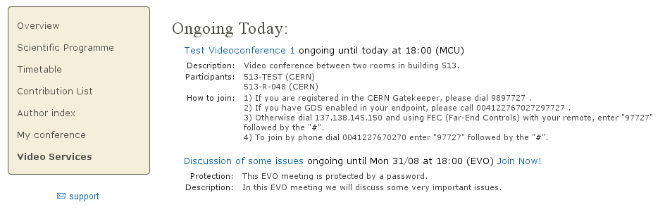

Indico Video Services
User
Guide
Indico User

v1.0
Table of Contents
2. Videoconferences in events of type “meeting” and “lecture”
3. Videoconferences in events of type “conference”
Guide for the Indico user
Indico now allows event managers to book and program videoconferences associated to their events. For example, the EVO and CERNMCU systems can be used. Indico users can see information about these videoconferences in the public pages of the events.
The goal of this guide is to show how to see information about videoconferences which have been programmed for Indico events of type meeting , lecture and conference , and how to join them.
If a videoconference has been booked for a meeting or a lecture, the page of that event will look as shown in In figure 1. You will notice there is a Video Services section.

Figure 1. Indico page for a meeting. The Video Services section is marked in orange color.
This Video Services section has a list of videoconferences that have been booked for this event. If the last line reads something similar to: “ There are 2 more scheduled bookings. Show ” , then you can click on Show to display all of them:

Figure 2 . Video Services section, showing a list of all of the bookings for the event.
If you want to hide them back to save visual space, click on Hide additional bookings . In meetings and lectures, we only show two bookings in order to save space for the timetable below.
In the previous list, each videoconference is represented by a line of text. The contents of this line are:
The title of the videoconference. If you click on it, you will see detailed information (see figure 3 below).
The starting and ending times of the booking, expressed in your timezone (the one that is selected in the top right bar). If the videoconference is currently ongoing, the word ongoing will appear.
The type of videoconference (EVO, MCU...).
If you can join the videoconference from your computer, a link to do so will be available. For example you can see the Join Now! link next to the second booking in the previous screenshot.
The videoconferences are ordered by their start time. Thus, ongoing conferences will be shown first, and then the scheduled ones.

Figure 3 . Detailed information for two videoconferences.
This detailed information will usually include:
Protection : the videoconference is protected by a password / PIN.
Description : the description given by the event managers.
Instructions on how to join , in case you cannot join from your PC because you need another physical device to do so. For example, for a CERN MCU's videoconference, you need to be in a CERN room equipped with an adequate videoconferencing camera and screen.
In Indico, a conference has several display pages. The display page for the Overview of a conference usually looks as shown in figure 4:

Figure 4. Overview of a conference.
You will notice that on the left there is a menu with several options. Clicking on those options will bring you to various sub-sections of the conference page.
Click on Video Services (highlighted in orange in figure 5) to access the Video Services section.

Figure 5. Video Services section for a conference.
The Video Services section has a list of videoconferences that have been booked for this event. First the videoconferences that are currently ongoing will appear, followed by the upcoming videoconferences. The upcoming videoconferences will be grouped by day, which is useful if the event takes several days.
Each videoconference is represented by a line of text, identical to those already described in section 2. Click on the title of the videoconference to show detailed information, and on the Join Now! link to join it, if there is one.
In the following screenshot we can see how the screen looks when we are consulting the detailed information of a booking.

Figure 6. Video Services section for a conference, showing detailed information for a booking.
EVO is a videoconferencing system that can run on your PC as long as you have a webcam connected to it.
An ongoing EVO videoconference associated to an Indico event will appear like this:

Figure 7. An ongoing EVO videoconference and its detailed information.
If the EVO booking is not ongoing yet, you will have to wait until its start time; before that, the Join Now! link will not appear.
To launch an ongoing EVO videoconference associated to an Indico event, just click on the Join Now! link:

Figure 8. An ongoing EVO videoconference. The Join Now! link is marked in orange.
This will connect you to the EVO webpage and download Koala, the EVO client. Koala is the program that will let you chat and videoconference with other EVO users, or remotely view and participate in events that are being recorded and streamed in EVO.
EVO may take a bit of time to download and load, so be patient...

Figure 9. Koala's loading screen .
You will be asked for your account name and password, unless you have already checked the option Save Password in a previous session.
After EVO's Koala has started, wait a few seconds and Koala should automatically go into the EVO meeting that you want to join. If it's a protected EVO meeting, you will have to input the password to access.

Figure 10. EVO's Koala client after the videoconference is joined automatically .
For more information about EVO or getting a free EVO account, go to http://evo.caltech.edu/evoGate/ .
An MCU is a machine that allows multiple videoconferencing - equipped rooms to have a common videoconference .
An MCU videoconference associated to an Indico event will look like this:

Figure 11. Detailed information for a MCU videoconference.
Unlike EVO, MCU videoconferences cannot be joined from your PC; they are room-to-room videoconferences.
Usually, the event managers will have defined a list of participants (rooms) that will participate in the videoconference. When the videoconference starts, the MCU will contact the videoconferencing systems of those rooms automatically.
However, if you want to join the videoconference from your room, by phone, etc., you have to follow the instructions in the detailed information. Here are the different methods to join a MCU videoconference:
Dial a number in the CERN Gatekeeper: you have to dial a prefix (in the example, 98), and then the Conference ID (97727 in the example).
By GDS: call a phone number composed by a prefix (in the example, 0041227670272), plus the Conference ID (97727).
Using the Far-End Controls of your H.323 camera remote, dial the IP address of the MCU (in the example, 137.138.145.150) and enter the Conference ID (97727) followed by the # sign.
Join directly by phone by dialing a prefix (00412276770270 in the example), and enter the Conference ID (97727) followed by the # sign.
For further instructions on how to join a MCU videoconference by yourself, one can contact videoconference-support@cern.ch .